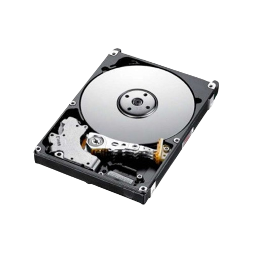

Partes de la computadora:
Unidad Central de Procesamiento (CPU)
La CPU es el cerebro de la computadora. Se encarga de interpretar y ejecutar instrucciones de los programas, realizando cálculos y tomando decisiones para que el sistema funcione.
Memoria RAM
La memoria RAM es la memoria de trabajo temporal donde la computadora almacena los datos e instrucciones que está utilizando en ese momento, permitiendo un acceso rápido durante el procesamiento.
Disco Duro o SSD
Es el almacenamiento permanente de la computadora, donde se guardan el sistema operativo, los programas y los archivos personales. Los SSD son más rápidos y resistentes que los discos duros tradicionales.
Placa Base (Motherboard)
Una placa Base es la placa de circuitos principal de una computadora que conecta todos los componentes, como el procesador, la memoria RAM y el disco duro, permitiendo que se comuniquen entre sí.
Actúa como la columna vertebral del sistema, alojando los circuitos, ranuras de expansión y puertos necesarios para el funcionamiento del equipo.
También contiene el firmware BIOS, que realiza las funciones básicas de inicio y configuración.
Conectores SATA
Son interfaces que se utilizan para conectar dispositivos de almacenamiento, como discos duros (HDD) y unidades de estado sólido (SSD), a la placa base de un ordenador, permitiendo la transmisión de datos y energía.
Northbridge
El "northbridge" (o puente norte) es un chip en la placa base de un ordenador que actúa como un conector de alta velocidad entre la CPU, la memoria RAM y la tarjeta gráfica, gestionando la comunicación y la transferencia de datos entre ellos.
Conectores de Alimentación

Los conectores de alimentación son dispositivos que permiten el paso seguro de energía eléctrica de una fuente a un aparato electrónico.
Ranuras de Memoria RAM

Las ranuras de memoria RAM son los conectores físicos en una placa base donde se insertan los módulos de memoria RAM para que la CPU acceda rápidamente a los datos.
Estas ranuras permiten expandir la memoria del sistema, mejorando el rendimiento general y la capacidad multitarea.
Zócalo del procesador
Es la interfaz en la placa base donde se conecta el procesador (CPU).
Su función es establecer la conexión física y eléctrica entre la CPU y el resto del sistema, permitiendo que el ordenador funcione.
Cable VGA
VGA, o Video Graphics Array, es una interfaz estándar utilizada para conectar dispositivos de salida de video a computadoras, proyectores, monitores y televisores.
Puerto Paralelo

Un puerto paralelo es una interfaz de computadora que permite la transferencia de datos a través de múltiples líneas de conexión simultáneamente, es decir, envía varios bits de información al mismo tiempo, en lugar de uno a uno como en un puerto serie.
Puertos USB
Un puerto USB es una ranura para conectar dispositivos electrónicos a una computadora, que permite transferir datos y/o cargar energía.
Conector HDMI
Un puerto HDMI (Interfaz Multimedia de Alta Definición) es una conexión digital que transmite señales de audio y video de alta calidad a través de un único cable.
Funciona como un reemplazo digital de los estándares analógicos antiguos, permitiendo una imagen más nítida y audio de alta fidelidad entre dispositivos como televisores, monitores, consolas de videojuegos y computadoras.
Conector de red RJ45
Los conectores RJ45 son los más utilizados para conectar un dispositivo con acceso a Internet con otro dispositivo de red.
Tarjeta Gráfica (GPU)
La GPU es responsable de procesar y generar las imágenes y videos que se muestran en el monitor, especialmente importante para juegos, edición gráfica y diseño 3D.
Tarjeta de Sonido

La Tarjeta de sonido es un componente interno (o externo) de las computadoras que convierte las señales digitales a analógicas y viceversa, optimizando el audio para el usuario final, como en videojuegos, música o películas.
Tarjeta de Red

Una tarjeta de red es un componente de hardware que permite que una computadora se conecte a una red, como internet o una red local.
Actúa como un puente, preparando, enviando y recibiendo datos entre el equipo y el mundo exterior.
La BIOS

La BIOS (Basic Input/Output System) es un firmware en la placa base de un ordenador que actúa como intermediaria entre el sistema operativo y el hardware.
Su función principal es iniciar el ordenador, realizar una prueba de autodiagnóstico (POST) para verificar que los componentes básicos funcionan correctamente y cargar el sistema operativo.
Puertos PCI
Los puertos PCI (Peripheral Component Interconnect) son ranuras de expansión en la placa base de una computadora que permiten conectar tarjetas de expansión como tarjetas de sonido o red.
Pila CMOS
La pila CMOS, es una batería de botón (generalmente modelo CR2032) que alimenta la memoria CMOS y el reloj del sistema, manteniendo configuraciones como la fecha, hora y ajustes de hardware cuando el PC está apagado.
Southbridge
El Southbridge, o puente sur, es un chip en la tarjeta madre que administra las funciones de entrada/salida (E/S) de baja velocidad de la computadora, como los puertos USB, SATA, audio y el BIOS.
Fuente de Poder
Convierte la energía eléctrica de la toma de corriente en voltajes adecuados para alimentar y hacer funcionar todos los componentes internos de la computadora.
Unidad de Entrada
Son dispositivos que permiten al usuario introducir datos e instrucciones a la computadora, como el teclado, el ratón, micrófonos, escáneres, y cámaras.
Unidad de Salida
Dispositivos que muestran o reproducen la información procesada por la computadora, tales como el monitor, impresora, altavoces y proyectores.
Dispositivos de Almacenamiento Externo
Permiten guardar y transportar información fuera de la computadora. Ejemplos incluyen memorias USB, discos duros externos y tarjetas SD.
JUEGOS
|
Motherboard |

Disco Duro |

Partes de la computadora |